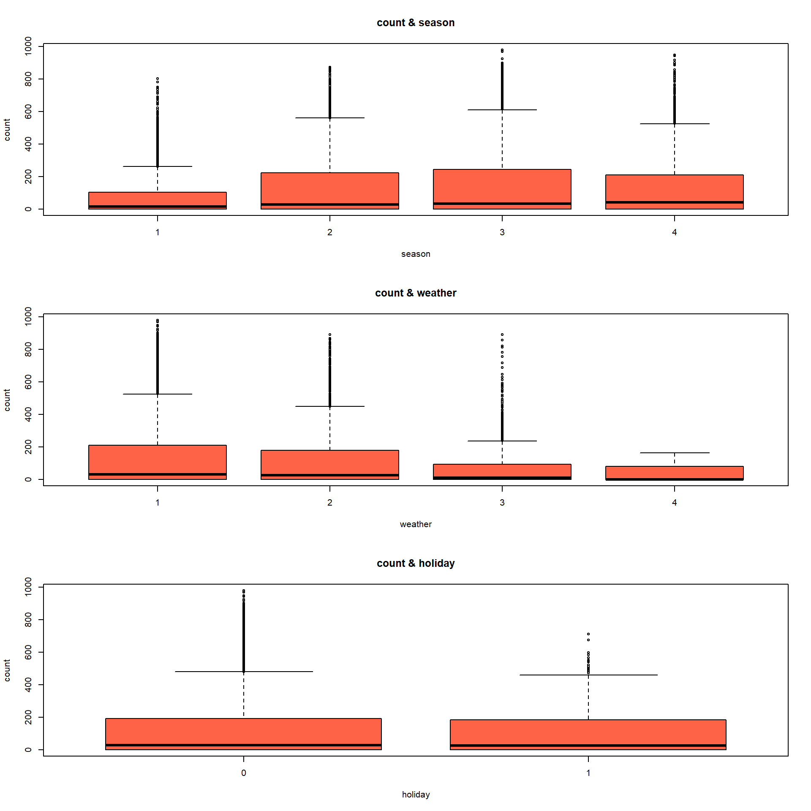
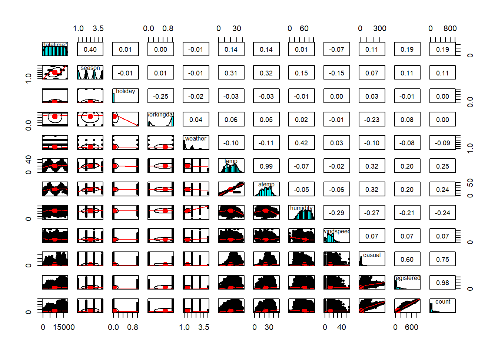

datetime season holiday workingday
Length:17379 Min. :1.000 Min. :0.00000 Min. :0.0000
Class :character 1st Qu.:2.000 1st Qu.:0.00000 1st Qu.:0.0000
Mode :character Median :3.000 Median :0.00000 Median :1.0000
Mean :2.502 Mean :0.02877 Mean :0.6827
3rd Qu.:3.000 3rd Qu.:0.00000 3rd Qu.:1.0000
Max. :4.000 Max. :1.00000 Max. :1.0000
weather temp atemp humidity
Min. :1.000 Min. : 0.82 Min. : 0.00 Min. : 0.00
1st Qu.:1.000 1st Qu.:13.94 1st Qu.:16.66 1st Qu.: 48.00
Median :1.000 Median :20.50 Median :24.24 Median : 63.00
Mean :1.425 Mean :20.38 Mean :23.79 Mean : 62.72
3rd Qu.:2.000 3rd Qu.:27.06 3rd Qu.:31.06 3rd Qu.: 78.00
Max. :4.000 Max. :41.00 Max. :50.00 Max. :100.00
windspeed casual registered count
Min. : 0.000 Min. : 0.00 Min. : 0.0 Min. : 1.0
1st Qu.: 7.002 1st Qu.: 4.00 1st Qu.: 36.0 1st Qu.: 42.0
Median :12.998 Median : 17.00 Median :118.0 Median :145.0
Mean :12.737 Mean : 36.02 Mean :155.6 Mean :191.6
3rd Qu.:16.998 3rd Qu.: 49.00 3rd Qu.:222.0 3rd Qu.:284.0
Max. :56.997 Max. :367.00 Max. :886.0 Max. :977.0
NA's :6493 NA's :6493 NA's :6493
na 값 확인
for (i in1:length(alldf)){cat(colnames(alldf)[i],sum(is.na(alldf[,i])),'\n')}
계절이나 날씨 (독립변수, 범주형 변수)가 count 자전거 대여량(종속변수, 수치형 변수)에 미치는 영향 (집단 간 차이)를 알고 싶어서 일원분산분석을 실시. 그러나 분산 분석을 사용하기 위해서는 정규성과 등분산성이 가정이 되야함. 그러나 자전거 데이터는 정규성 표본 크기가 커서 정규성 가정에 크게 제한을 받지 않아서 생략.
bartlett 검정 - 집단 간 분산의 동일성 여부 확인
library(car)
Loading required package: carData
Attaching package: 'car'
The following object is masked from 'package:dplyr':
recode
bartlett.test(count ~ season, data = alldf)
Bartlett test of homogeneity of variances
data: count by season
Bartlett's K-squared = 1235.1, df = 3, p-value < 2.2e-16
bartlett.test(count ~ weather, data = alldf)
Bartlett test of homogeneity of variances
data: count by weather
Bartlett's K-squared = 335.55, df = 3, p-value < 2.2e-16
bartlett.test(count ~ holiday, data = alldf)
Bartlett test of homogeneity of variances
data: count by holiday
Bartlett's K-squared = 3.7999, df = 1, p-value = 0.05126
bartlett.test(count ~ workingday, data = alldf)
Bartlett test of homogeneity of variances
data: count by workingday
Bartlett's K-squared = 16.604, df = 1, p-value = 4.606e-05
그 결과 season과 weather, workingday는 p값이 0.05보다 작기에 집단 간 분산이 같다는 귀무가설을 기각하고 등분산성을 충족하지 못했기에 oneway.test 함수를 사용함. 그리고 holiday는 등분산성 가정이 됐기에 aov 가정이 성립.
oneway.test(count ~ season, data = alldf)
One-way analysis of means (not assuming equal variances)
data: count and season
F = 224.14, num df = 3.0, denom df = 9463.1, p-value < 2.2e-16
oneway.test(count ~ weather, data = alldf)
One-way analysis of means (not assuming equal variances)
data: count and weather
F = 73.975, num df = 3.0000, denom df = 9.9978, p-value = 3.97e-07
oneway.test(count ~ workingday, data = alldf)
One-way analysis of means (not assuming equal variances)
data: count and workingday
F = 0.43713, num df = 1, denom df = 11223, p-value = 0.5085
ho <-aov(count ~ holiday, data = alldf,)summary(ho)
Df Sum Sq Mean Sq F value Pr(>F)
holiday 1 9893 9893 0.339 0.56
Residuals 17377 506429635 29144
library(gplots)
Attaching package: 'gplots'
The following object is masked from 'package:stats':
lowess
Warning in arrows(x, li, x, pmax(y - gap, li), col = barcol, lwd = lwd, : zero-
length arrow is of indeterminate angle and so skipped
Warning in arrows(x, li, x, pmax(y - gap, li), col = barcol, lwd = lwd, : zero-
length arrow is of indeterminate angle and so skipped
Warning in arrows(x, li, x, pmax(y - gap, li), col = barcol, lwd = lwd, : zero-
length arrow is of indeterminate angle and so skipped
Warning in arrows(x, ui, x, pmin(y + gap, ui), col = barcol, lwd = lwd, : zero-
length arrow is of indeterminate angle and so skipped
Warning in arrows(x, ui, x, pmin(y + gap, ui), col = barcol, lwd = lwd, : zero-
length arrow is of indeterminate angle and so skipped
Warning in arrows(x, ui, x, pmin(y + gap, ui), col = barcol, lwd = lwd, : zero-
length arrow is of indeterminate angle and so skipped
par(mfrow=c(3,1))boxplot(count~season ,data = alldf, col ='tomato',main ='count & season')boxplot(count~weather ,data = alldf, col ='tomato',main ='count & weather')boxplot(count~holiday ,data = alldf, col ='tomato',main ='count & holiday')

par(mfrow =c(1,1))
상관분석
library(psych)
Attaching package: 'psych'
The following object is masked from 'package:car':
logit
pairs.panels(alldf)

다중회귀분석
alldf <- alldf[, -1]summary(alldf)
season holiday workingday weather
Min. :1.000 Min. :0.00000 Min. :0.0000 Min. :1.000
1st Qu.:2.000 1st Qu.:0.00000 1st Qu.:0.0000 1st Qu.:1.000
Median :3.000 Median :0.00000 Median :1.0000 Median :1.000
Mean :2.502 Mean :0.02877 Mean :0.6827 Mean :1.425
3rd Qu.:3.000 3rd Qu.:0.00000 3rd Qu.:1.0000 3rd Qu.:2.000
Max. :4.000 Max. :1.00000 Max. :1.0000 Max. :4.000
temp atemp humidity windspeed
Min. : 0.82 Min. : 0.00 Min. : 0.00 Min. : 0.000
1st Qu.:13.94 1st Qu.:16.66 1st Qu.: 48.00 1st Qu.: 7.002
Median :20.50 Median :24.24 Median : 63.00 Median :12.998
Mean :20.38 Mean :23.79 Mean : 62.72 Mean :12.737
3rd Qu.:27.06 3rd Qu.:31.06 3rd Qu.: 78.00 3rd Qu.:16.998
Max. :41.00 Max. :50.00 Max. :100.00 Max. :56.997
casual registered count
Min. : 0.00 Min. : 0.00 Min. : 0
1st Qu.: 0.00 1st Qu.: 0.00 1st Qu.: 0
Median : 3.00 Median : 23.00 Median : 28
Mean : 22.56 Mean : 97.44 Mean :120
3rd Qu.: 26.00 3rd Qu.:155.00 3rd Qu.:192
Max. :367.00 Max. :886.00 Max. :977
count와 나머지 변수
model1 <-lm(count ~ . , data = alldf)summary(model1)